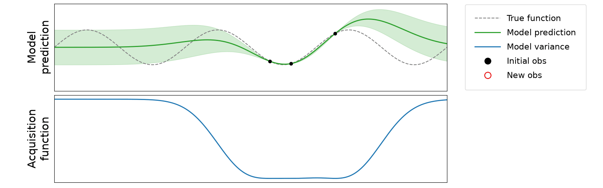

GIANT-sp is a tool to aid optimal sensor placement for monitoring climate tipping points.
The challenge: surface melt as a proof of concept
The Greenland Ice Sheet is one of the climate system's key tipping elements. We use surface melt prediction as a proof-of-concept challenge.
Tipping-relevant
Surface melt drives a large share of Greenland's mass loss and the melt–elevation feedback, so better melt monitoring feeds directly into tracking the tipping point.
Testable
Outputs of regional climate models (RCM) are treated as "truth" to score against, alongside locations of long-term stations. This lets us measure how much each proposed sensor actually helps.
Transferable
Nothing in the method is specific to melt. The same model and search can be retargeted to other variables and tipping elements once the approach is proven here.
The recipe
model \(p(\boldsymbol{y} \mid \text{data})\)
acquisition function \(\alpha(x)\)
placements \(x^*\)

- Building on the principles of active learning, it uses probabilistic models, specifically Convolutional Conditional Neural Process (ConvCNP) models, available in the DeepSensor library.
- It trains spatial-interpolation models on gridded RCM data plus augmented station locations, then uses the trained model to run active-learning searches for new sensor placements.
- This demo showcases the tool's capabilities and provides a dashboard for exploring the data, model, and sensor-placement results for surface melt.
Pipeline
1. Data loading
Per-source data loaders normalize gridded data and build data iterators readable for ConvNP models.
2. Training
A ConvCNP model is trained to interpolate the target variable from sparse context observations, validated against unseen ground truth.
3. Placement
The trained model drives a greedy active-learning search to propose new sensor locations that most reduce predictive uncertainty.